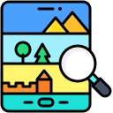

- Открывать новые горизонты: Исследуйте местоположения в любой точке планеты. Наши карты охватывают не только крупные мегаполисы, но и мелкие города и населенные пункты, обеспечивая вас полным представлением о каждом уголке мира.
- Планировать свои путешествия: Удобно прокладывайте маршруты и находите оптимальные пути до ваших целей. Будь то деловая поездка или отпуск, Map2 поможет вам спланировать путешествие без лишних забот
- Находить интересные места: Искать рестораны, отели, достопримечательности и многое другое стало проще.
Почему выбрать Map2?
Map2 предлагает вам уникальные возможности для исследования и планирования ваших поездок. Наш сервис обеспечивает:
Обширные карты и детальные данные
С Map2 вы получаете доступ к картам мирового уровня, которые охватывают как крупные города, так и маленькие населенные пункты. Мы предоставляем актуальную информацию, чтобы вы могли легко ориентироваться в любом месте.
Интуитивно понятный интерфейс
Наш интерфейс разработан с учетом удобства пользователей, чтобы вы могли легко планировать свои маршруты и находить нужные места без лишних усилий.
Поддержка планирования маршрутов
Планируйте свои путешествия с помощью мощных инструментов для построения маршрутов. Независимо от того, куда вы направляетесь, Map2 поможет найти наилучший путь и учтет все ваши предпочтения.
Обнаружение интересных мест
Ищите и находите рестораны, отели, достопримечательности и другие интересные места с Map2. Мы поможем вам открыть для себя новые возможности и сделать ваше путешествие незабываемым.
